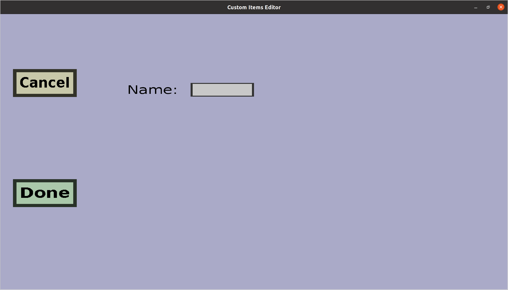

The input slot menu can be used to add input slots to a custom container. Input slots are the slots
in which players need to put the ingredients for the recipes of the container. Input slots
have a name and a placeholder. The menu should look like this:

-
The 'Cancel' button will take you back to the container edit menu
you came from, without adding a new input slot.
-
The 'Done' button will replace the original slot with a new input slot with the name you
typed into the edit field (if no validation errors occur). It will then take you back to the
container edit menu you came from.
-
You should type the name of the input slot you're about to create in the edit field
on the right of 'Name:'. No two input slots of the same custom container can have the same
name. The name will not be used in-game, but it will be used to link the inputs of the
container recipes to the input slots. So to move an input slot, you would delete it and
create a new input slot with the same name somewhere else.
-
The Placeholder will be displayed in the slot when no ingredient is currently in the slot.
Click the Choose... button to choose the placeholder and click the Clear... button to remove it.
Note: the placeholder is optional!